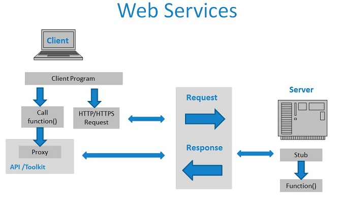
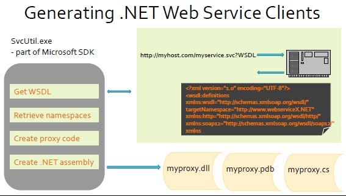
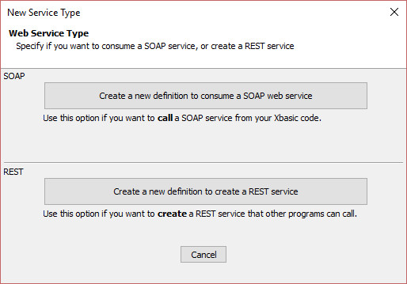
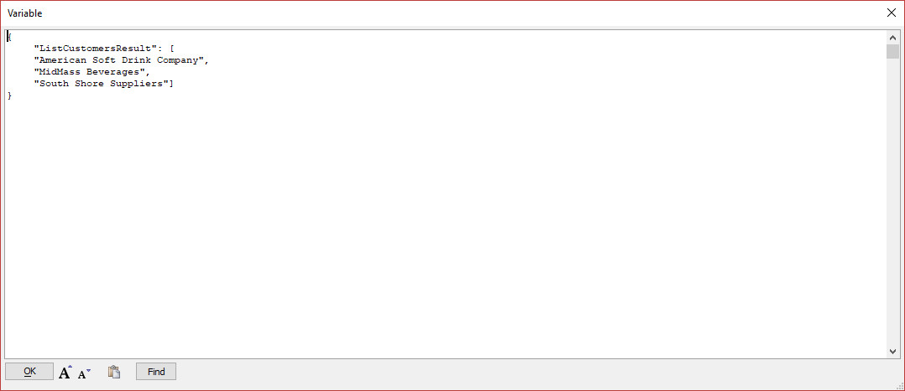

Effective September 1, 2022, Alpha Anywhere (all products and platforms) is deprecating support for WCF and SOAP web services.
If your application depends on SOAP or WCF services, contact your vendor immediately for instructions on connecting using a RESTful service and convert your applications to use RESTful service APIs.
Effective January 1, 2023, Alpha Anywhere will no longer support WCF and SOAP web services. WCF and SOAP service support will be removed in future releases of the product.
Web Services: SOAP Web Service Clients
This article will discuss in depth what web services are, specifically SOAP web services and how Microsoft WCF
can be used to interact with them. We are going to cover some of the basic concepts, look at Xbasic code and then
learn to use tools that will help automate the process of integrating your web service.
After working through the examples, you should understand:
- What a web service is
- What makes SOAP web services work and how they are "discoverable"
- How to generate a .NET assembly that connects to a web service
- How to connect securely to a web service
- How to troubleshoot your client when calling functions on a web service
A web service is a standardized way of communicating between a client and a server program using web protocols.
By this, we mean that a wide variety of programming languages implemented on different platforms (Linux and Windows for example) can
pass requests and responses back and forth in a consistent way.
If web services don't sound like a big deal, it is because decades of experience and trial and error have led to
numerous standards from which web services have evolved.
That history includes DCE/RPC, APPC, CORBA, DCOM, and CGI, SOAP and RESTful services.
All of these protocols have complexities, and the most common approach for publicly available web services is to
include a downloadable Software Development Kit (SDK) that can be installed with your client application.
We will talk about how SOAP and Alpha Anywhere make it possible to create a client SDK yourself.
Most new services are implemented using a protocol called RESTful (Representational State Transfer), or REST services,
because they tranfer a stateful object between a client and a server.
RESTful services map standard HTTP calls (PUT, GET, POST, DELETE) to the traditional read and update behaviors.
The acronym CRUD (Create, Read, Update, Delete) has been around for many years, and RESTful services attempt
to present HTTP verbs that are equivalent to these operations.
While the number of RESTful services is growing rapidly, there are still many services
built using the SOAP protocol.
We will not cover RESTful services in this article, but will instead show how to consume a SOAP service.
There are a number of things that have to work just right to make a web service call.
To get a sense of what you would have to do to implement web services from scratch in your own code, consider the following:
- First we have to find the service. This requires that we know the TCP/IP address (or server name) and the port to connect to.
- All of the data we want to send must be converted into a stream of data (serialized using standard bit formats and character sets).
- We need to format and make a specific request, and the server needs to send a response.
- All of the data received needs to be converted back into objects and variables our programming environment understands (deserialized).
- And all of this needs to be done securely!
Web Service APIs make all of this look like a function call.
SOAP is a standard format that uses HTTP (or HTTPS) to make a web service request using the same HTTP protocol that browsers use.
The request can be passed through firewalls and reach the target server, taking advantage of HTTP aware infrastructure.
This is really important because most installations allow HTTP (port 80) and HTTPS (443) but close off other ports.
Although the server responding to the request needs to recognize a service request, the intervening network devices don't need to understand what SOAP is.
Requests are formatted using XML (Extensible Markup Language), and the data is formatted as XML as well.
XML looks very much like HTML that is used to format web pages.
You can code a SOAP "envelope" by hand, but in most cases, a tool is used to generate a "proxy" object that
looks like a class or library in a programming language familiar to you, such as Xbasic.
Under the covers, the proxy object makes use of other software to deserialize the data and format the SOAP envelope required by the server.
The server side implementation is also typically generated, producing what is referred to as a "stub" that
a programmer can use as a template to implement the actual behavior of the request made.

Here is an example of an HTTP request sent using the SOAP protocol.
POST /InStock HTTP/1.1
Host: www.example.org
Content-Type: application/soap+xml; charset=utf-8
Content-Length: 299
SOAPAction: "http://www.w3.org/2003/05/soap-envelope"
<?xml version="1.0"?>
<soap:Envelope xmlns:soap="http://www.w3.org/2003/05/soap-envelope">
<soap:Header> </soap:Header>
<soap:Body>
<m:GetStockPrice xmlns:m="http://www.example.org/stock/Surya">
<m:StockName>IBM</m:StockName>
</m:GetStockPrice>
</soap:Body>
</soap:Envelope>
For more information on SOAP see Wikipedia.
SOAP Services are self describing.
Web Service Definition Language is a great feature for development tools such as Alpha Anywhere because we can use WSDL files to generate a client proxy automatically.
What you are presented with in your code is a class that represents the service that has methods that you can call from Xbasic directly.
This "proxy" object usually has a name that ends with or contains "Client".
In addition to the proxy or client class with the methods, there are usually additional classes
that define objects to be passed as part of a request or returned as part of a response.
These objects may contain other objects, creating a sometimes overwhelming hierarchy of objects.
Because of the complexity of describing the set of method calls exposed by a SOAP service, the XML describing a SOAP service is typically
quite large and difficult to read.
Example WSDL Contents
<?xml version="1.0" encoding="UTF-8"?>
<wsdl:definitions xmlns:wsdl="http://schemas.xmlsoap.org/wsdl/" targetNamespace="http://www.webserviceX.NET" xmlns:http="http://schemas.xmlsoap.org/wsdl/http/" xmlns:soap12="http://schemas.xmlsoap.org/wsdl/soap12/" xmlns:s="http://www.w3.org/2001/XMLSchema" xmlns:soap="http://schemas.xmlsoap.org/wsdl/soap/"
xmlns:tns="http://www.webserviceX.NET" xmlns:mime="http://schemas.xmlsoap.org/wsdl/mime/" xmlns:soapenc="http://schemas.xmlsoap.org/soap/encoding/" xmlns:tm="http://microsoft.com/wsdl/mime/textMatching/">
<wsdl:types>
<s:schema targetNamespace="http://www.webserviceX.NET" elementFormDefault="qualified">
<s:element name="GetWeather"><s:complexType><s:sequence>
<s:element name="CityName" type="s:string" maxOccurs="1" minOccurs="0"/><s:element name="CountryName" type="s:string" maxOccurs="1" minOccurs="0"/></s:sequence></s:complexType></s:element>
<s:element name="GetWeatherResponse"><s:complexType><s:sequence>
<s:element name="GetWeatherResult" type="s:string" maxOccurs="1" minOccurs="0"/></s:sequence> </s:complexType></s:element>
<s:element name="GetCitiesByCountry"><s:complexType><s:sequence>
<s:element name="CountryName" type="s:string" maxOccurs="1" minOccurs="0"/></s:sequence></s:complexType></s:element>
<s:element name="GetCitiesByCountryResponse"><s:complexType><s:sequence>
<s:element name="GetCitiesByCountryResult" type="s:string" maxOccurs="1" minOccurs="0"/></s:sequence></s:complexType></s:element>
<s:element name="string" type="s:string" nillable="true"/>
</s:schema>
</wsdl:types>
(and the listing goes on for pages!)
WSDL is generally generated on the server side and is retrieved by making a web request and appending "?WSDL" to the URL that references the service.
Alpha Anywhere uses WSDL files to generate client side .NET assemblies that can be used from Xbasic to call the described web service.
Windows Communication Foundation (WCF) is a proprietary Microsoft technology intended to create a general purpose
environment for SOAP, RESTful web services with XML and JSON data,
and using a variety of transports including HTTP on TCP/IP, queues, e-mail and named pipes.
It is highly configurable and can be deployed using multiple transports at once with the same software implementation.
Unfortunately, WCF is conceptually simple but proved to have introduced complexities in trying to be a general solution to many problems.
A few years ago Microsoft decided to "open source" WCF and further development of the technology is uncertain.
You can find out more about WCF in .NET Core at WCF is Open Source
Nonetheless, there are still many web services used in Microsoft shops that implement services using WCF.
The ABCs of WCF
In theory, WCF is quite simple. The letters A, B, and C are used to describe the fundamental concepts.
A - Address refers to how we find the destination server (the "endpoint").
For TCP/IP transports, the address is a URL made up of the server name and the port on the server to be accessed (usually 80 or 443) followed by a path to the server.
This will be everything up to the list of query arguments, if any.
B - Binding is about how the data will reach the endpoint. This is generally SOAP over HTTP,
but can vary.
C - Contract is an agreement (between the client and the server) as to what requests are to be made
and what data will be sent between them.
The contract is integral to the implementation of the service, but the address and binding can be changed in the configuraion file (also XML).
A web service that exposes the WSDL from the site itself makes it possible to read the latest version of the service
and generate a proxy from a development environment like Alpha Anywhere.
In this section, we will see how you can generate a proxy by writing Xbasic or by creating a Web Reference in the Web Project Control Panel.
You can create a new proxy using Xbasic directly by invoking a function on the DotNet::Services object.
Sometimes you will be given a file containing the WSDL instead.
There are methods to generate the proxy from the WSDL directly as well.
In this example, we are going to implicitly make a web call to read the WSDL from a server directly and use that download WSDL to generate the proxy.
There are three steps required to integrate a SOAP Web Service into Xbasic:
- Generate the web service proxy (a .NET assembly/DLL). Do this once.
- Add the new assembly to the Xbasic type system. Do this once per running application/process.
- Dimension (DIM) a variable of the type of the web service client object and use the variable to make calls to the service object as needed.
Step 1: Generate the Web Service Proxy
You can use the tools in Alpha Anywhere to generate a proxy or generate the proxy from Xbasic itself. Let's start with Xbasic.
In the code example below, we are going to use the DotNet::Services class to generate the proxy assembly in the file specified.
To get the WSDL, we need the URL for the service
(and possibly a username and password, but these are optional parameters to the generation function).
An Xbasic Example of Generating a Web Service Proxy
DIM ProxyAssembly as C = "c:\temp\myProxy.dll"
DIM WSDLURL as C = "http://hostname.com/service.svc?WSDL"
IF .not. File.Exists(ProxyAssembly)
DIM Sv as DotNet::Services
Sv.GenerateWebServiceClientFromURL(WSDLURL, ProxyAssembly)
END IF
- GenerateWebServiceClientFromURL() returns true or false. Check the CallResult property on the DotNet::Services object.
- Do this once: Save the assembly (DLL) file generated and install that assembly on your server in the executable path.
- The ".svc" extension is used by Microsoft for its web services. You may also find ".asmx", ".php", ".soap.2", ".cfc", another one, or even none at all.

From the diagram, you can see that three files are produced by the generator:
The Proxy Assembly
This is the assembly you will register and use to talk to your web service.
The Debugging Symbol File(PDB)
This file can be used within Visual Studio to debug your assembly.
We may ask for this file for troubleshooting a web service connection.
The Source Code
This file is a C# source file that is generated and then compiled into your assembly.
The file contains all of the source code that differentiates the service you are calling service from other services.
You can learn a lot about the service in reading this file.
Step 2: Add the Assembly to the Xbasic Type system
Once you have created the assembly (a DLL) containing the proxy, you will need to make the assembly file part of your
web project so it is installed with your other files.
Put the file in a folder under your web project called "bin" and add the file to your web project.
The Xbasic type system does not know about your new assembly, so you will need to register the assembly in order
to use it. The DotNet namespace has an object called Services that you can use to register
your assembly within Xbasic. Calling this system updates the global Xbasic type system so your assembly can be used.
Create a Dotnet::Services object by dimensioning a variable and pass in a unique namespace to access your assemblies types
and keep them separate from other types in Xbasic that might have the same name.
In the example below, we use the name "::Serv", but you should probably choose a name that you will remember, such as the service name.
Once per running process, you must add the assembly to the Xbasic type system.
If you are running under IIS, multiple processes may be running on multiple servers, and it is difficult
to know whether a request is running on a particular server and a specific process for the first time.
You can use the Xbasic static function Type::Definition::Exists() to determine if your
namespace already exists to prevent calling DotNet::RegisterAssembly() more than once per running process
An Xbasic Example of Adding the Assembly to the Xbasic Type System
IF .not. Type::Definition::Exists(" ::Serv ") THEN
dim Sv as DotNet::Services
dim Assy as DotNet::AssemblyReference
Assy.FileName = " c:\temp\myproxy.dll "
Sv.RegisterAssembly("::Serv", Assy)
END IF
- RegisterAssembly returns true or false. Check the CallResult property of the DotNet::Services object.
- Use a namespace ("::Serv" is probably not a good namespace!) that is unique on your server.
In many cases, the root namespace in the assembly is unique enough.
You can use "::" to install the assembly in the root of the Alpha Anywhere type system.
Step 3: DIM the Client Variable
Once the assembly has been added to the Xbasic type system, you can dimension (DIM) a variable
containing an instance of the client class.
Use the variable to make service calls by simply calling a function. The client and proxy implementation
will take care of making the actual calls to the server.
Dimensioning the Xbasic Variable to Create the Client
DIM Client as ::Serv::Client
- Do this as needed. You do not have to hold on to the Client variable.
- Don't worry that this looks too easy! We'll add more code later.
Once the client is dimmed, you can call its functions as with any .NET assembly. It could be as simple as:
DIM Client AS ::Serv::Client
Result = Client.SumValues(1,2,3,4,5)
Most cases probably won't be this simple. We will see why later.
Step 4: "Wait! What? How do I use this thing?"
Once we have a client, we have to figure out how to set valid parameters and process the response.
Most web services are more complex than the calculator example above.
The Xbasic interactive window is a really great place to explore.
As you saw above, we keep the generated C# source.
Sometimes this is just as helpful because the generate source includes declared types.
You can create a script in the Interactive Window of the Alpha Anywhere development environment to
generate, register and explore your client object using auto-help.
The proxy client is a .NET assembly.
These assemblies are loaded (what happens when you register your assembly) only once per running .NET application domain.
If you are testing in the development environment and need to regenerate your assembly, you may
need to exit Alpha Anywhere to unload the assembly.
Now that you understand what it takes to generate and make use of a proxy to make calls to a web service, let's look at a tool to make things easier.
You can accomplish most of what we have done in Xbasic to create a reference to a SOAP web service directly from the Web Project Control Panel.
In this section we will show how to a create and test a web reference.
The assembly generated is automatically added to your web project.
- From the Web Project Control Panel, select "Web Services" from the list of objects and click the "New" button in the Web Project Control Panel toolbar.

- When prompted to select the service type, click on the button labeled SOAP

- The New Web Reference dialog will be displayed.
Once your Web Reference is created, you can test it by selecting Web Services in the list on Web Project Control Panel and then double
clicking on the Web Reference in the list to the right.
The Edit/Explore Web Reference dialog can be used to edit your settings or to explore the methods published by the service and the arguments and return
types for those methods.
Select the a method you want use and click the Test Method link. This will generate Xbasic code you can use for testing.
The editor will open with a test script generated for your service. You will need to provide values for any arguments.
Click the Execute button to execute your script and see the results.
A window will open with the results of your web service call.

After you make your changes and are satisfied with the results, you can copy the edited Xbasic script to the clipboard and paste the script into the
Xbasic editor for a server side script.
WCF services tend to use a request/response pattern to make web service calls.
By this, we mean that the request is actually an object itself and the call returns an object referred to as a response object.
The type information generated into an assembly will reflect this in the function signatures.
The format of a complete call looks something like this:
DIM Request as MyNamespace::MyFunctionRequest
DIM Response as MyNamespace::MyFunctionResponse
Request.SomeValue = 'value'
Response = MyClient.MyFunction(Request)
Here is an example of a request/response call using the WorldPay web service being executed in the Xbasic interactive window.
DIM Request as WorldPay::ProcessCCSaleRequest
Request.ccinfo = new WorldPay::CreditCardInfo()
Request.ccinfo.acctid = "TEST0"
Request.ccinfo.ccname = "Tony Test"
Request.ccinfo.ccnum = "5454545454545454"
Request.ccinfo.amount = 3.00
Request.ccinfo.expmon = 03
Request.ccinfo.expyear = 2010
Response = Client.ProcessCCSale(Request)
?response.ProcessCCSaleReturn
authcode = "DECLINED:1000420001:VALID PIN REQUIRED:"
Note that we had to dim a request object and populate the arguments for the request.
The call resulted in an error, and the response has an authcode property with the actual message.
As we discussed when introducing Windows Communication Foundation (WCF), the intention behind WCF was to provide flexibility
when a service is installed and configured.
The settings required by the configured web service as installed on the server must be matched on the client.
In many applications, the executable is configured using a file with the same base name and a ".config" extension.
It is possible to create a ".config" file for alpha5.exe (the executable for the Alpha Anywhere development environment)
or for A5ApplicationServer.exe (the executable for the Classic version of Alpha Anywhere Application Server).
With IIS installations, however, Alpha Anywhere is not run as a stand-alone executable.
Instead, each process is run under the w3wp.exe application; which is used for all web sites.
To configure a service client in Xbasic, you set the options on the client object, sometimes using additional classes that
are part of the .NET framework. We will discuss some of them in the sections below.
As we discussed in the section above introducting Windows Communication Foundation (WCF), bindings (the B in ABC) is the way the client
communicates with the server.
WCF is designed to support many different bindings (ways of communicating).
These include HTTP, WS* protocols, simple TCP/IP bindings and MSMQ (Microsoft Message Queueing).
The list below includes some of the more common bindings that are part of the System.ServiceModel namespace in the .NET framework:
- BasicHttpBinding
- WSHttpBinding
- WS2007HttpBinding
- WSDualHttpBinding
- NetTcpBinding
- NetNamedPipeBinding
- NetMsmqBinding
- WSFederationHttpBinding
- NetPeerTcpBinding
- MsmqIntegrationBinding
If necessary, you can even write your own custom binding, but that is beyond the scope of this article.
Setting a specific binding from Xbasic
The default constructor for a service client creates a default binding and end point.
Sometimes the default binding is not the one configured on the server.
If the bindings don't match, we may have to explicitly create a binding of the type required as part of dimensioning the client object.
To explicitly set the binding on a client object, we must declare variables for a binding and an endpoint (the A is for Address in our WCF discussion).
In the example below, we create a WSHttpBinding (a secure binding).
The contstructors generated by the .NET framework do not include constructors that only include a binding.
We must also create an EndPointAddress object with the URL we want to connect to.
In the simplest case, we would dimension the client object by simply declaring the variable.
DIM MyClient as Serv::MyClient
In order to explicitly choose the binding, we must use a constructor for the web service client (Serv::MyClient() in this case)
and pass the binding and endpoint object as parameters to the constructor.
You will have to provide the endpoint URL as a constructor argument for the System::ServiceModel::EndPointAddress object.
DIM b as System::ServiceModel::WSHttpBinding
DIM e as System::ServiceModel::EndPointAddress = new System::ServiceModel::EndPointAddress("http://...")
DIM MyClient as Serv::MyClient = new Serv::MyClient(b, e)
A constructor is a special function of a class that allows code to be executed when an object of a class is being created.
You can also pass arguments when creating the object and there can be multiple implementations of the constructor that accept different arguments.
Credentials
WCF clients can set security a number of ways depending on the requirements set by the server configuration.
You can set a username and password using the ClientCredentials property of the client.
You can also set HttpDigest credentials, Windows credentials, and you can even set credentials based on a certificate.
The one you require will depend on how the server side is configured.
client.ClientCredentials.UserName.UserName = "<user>"
client.ClientCredentials.UserName.Password = "<password>"
client.ClientCredentials.HttpDigest.ClientCredential.UserName = "<user>"
client.ClientCredentials.HttpDigest.ClientCredential.Password = "<password>"
client.ClientCredentials.Windows.ClientCredential.UserName = "<user>"
client.ClientCredentials.Windows.ClientCredential.Password = "<password>"
client.ClientCredentials.ClientCertificate.SetCertificate(
System::Security::Cryptography::X509Certificates::StoreLocation::LocalMachine,
System::Security::Cryptography::X509Certificates::StoreName::My,
System::Security::Cryptography::X509Certificates::X509FindType::FindBySubjectName,
"client.com")
Security Mode
Security in web services can be implemented at two levels: the message and the transport.
Security can be disabled or enabled at either the transport level, the message level, or both.
Transport level security is done at the network level. For example, SSL authentication occurs at the transport level.
Message level security relies on the message itself to take care of authentication.
Once the security level is selected, the type of credentials must also be set.
Setting the Security Mode
b.Security.Mode = System::ServiceModel::SecurityMode::BasicHttpSecurityMode::None
(Transport, Message, TransportCredentialOnly, TransportWithMessageCredential)
Setting the Transport Credential Type
b.Security.Transport.ClientCredentialType = System::ServiceModel::HttpClientCredentialType::None
(Basic, Certificate, Digest, InheritedFromHost, Ntlm, Windows)
Setting the Message Credential Type
b.Security.Message.ClientCredentialType = System::ServiceModel::MessageCredentialType::UserName
(Certificate, IssuedToken, UserName, Windows)
Example: Basic Security with WCF
In this example we want to set up basic security using Transport level security.
DIM b as System::ServiceModel::BasicHttpBinding
b.MessageEncoding = System::ServiceModel::WSMessageEncoding::Text
b.Security.Mode = System::ServiceModel::SecurityMode::Transport
b.Security.Transport.ClientCredentialType = System::ServiceModel::HttpClientCredentialType::None
b.Security.Transport.ProxyCredentialType = System::ServiceModel::HttpProxyCredentialType::None
DIM e as system::ServiceModel::EndPointAddress =
new System::ServiceModel::EndPointAddress("http://...")
dim MyClient as ::Serv::MyClient = new ::Serv::MyClient(b, e)
Example: Windows Security with WCF
In this example we want to set up Windows (integrated) security. Note that the security mode set is "None".
DIM b as System::ServiceModel::WSHttpBinding
b.Security.Mode = System::ServiceModel::SecurityMode::None
b.Security.transport.ClientCredentialType = System::ServiceModel::HttpClientCredentialType::Windows
b.Security.Transport.ProxyCredentialType = System::ServiceModel::HttpProxyCredentialType::None
b.Security.Transport.Realm = ""
b.Security.Message.ClientCredentialType = System::ServiceModel::HttpClientCredentialType::Windows
b.Security.Message.NegotiateServiceCredential = .t.
DIM e as System::ServiceModel::EndPointAddress = new System::ServiceModel::EndPointAddress("http://...")
DIM MyClient as ::Serv::MyClient = new ::Serv::MyClient(b, e)
The binding has four properties that control timeouts when making web service requests.
- OpenTimeout - Limits the time the client will wait trying to connect to the server.
- ReceiveTimeout - Limits the time the client will wait to receive a response.
- SendTime - Limits the time the client will wait to complete a write operation.
- CloseTimeout - Limits the time the client can hold the connection open.
You can set the timeout on the binding as with other settings. Note that the property is set using the .NET type System::Timespan.
The constructor being used in the example below accepts hours, minutes and seconds.
DIM b as System::ServiceModel::BasicHttpBinding
b.OpenTimeout = new System::TimeSpan(0,0,10) ' Connect
b.ReceiveTimeout = new System::TimeSpan(0,0,20) ' Inactivity
b.SendTimeout = new System::TimeSpan(0,1,0) ' Write Operation
b.CloseTimeout = new System::TimeSpan(0,0,15) ' Close Operation
DIM e as system::ServiceModel::EndPointAddress = new System::ServiceModel::EndPointAddress("http://...")
DIM ScriptService as ::Serv::MyClient = new ::Serv::MyClient(b, e)
The binding has properties that can be set to adjust quotas for a variety of data related values.
These values determine how much data can be returned in a single call.
If you run into problems, you will need to adjust the quotas.
The example below can handle most responses.
DIM b as System::ServiceModel::BasicHttpBinding
b.MaxReceivedMessageSize = 10485760
b.maxBufferSize = 10485760
b.MaxBufferPoolSize = 10485760
b.ReaderQuotas.maxDepth = 32
b.ReaderQuotas.MaxStringContentLength = 10485760
b.ReaderQuotas.MaxArrayLength = 16384
b.ReaderQuotas.MaxBytesPerRead = 4096
b.ReaderQuotas.maxNameTableCharCount = 16384
DIM e as system::ServiceModel::EndPointAddress = new System::ServiceModel::EndPointAddress("http://...")
DIM ScriptService as ::Serv::MyClient = new ::Serv::MyClient(b, e)
There is another setting that must be changed for each behavior or operation on a client.
The script below can be executed on your client object some time prior to the call.
It enumerates over all of the operations the object supports and sets the MaxItemsInObjectGraph value for each operation.
Operations = MyClient.Endpoint.Contract.Operations
for i = 1 to Operations.Count
Operation = Operations[i]
Behaviors = Operation.Behaviors
Enumerator = Behaviors.GetEnumerator()
while Enumerator.MoveNext()
Current = Enumerator.Current
if Current.gettype().FullName = \
"System.ServiceModel.Description.DataContractSerializerOperationBehavior"
Current.MaxItemsInObjectGraph = 2147483647
end if
end while
next
Xbasic is a BASIC language derivative and has its own syntax and runtime semantics.
.NET implements a runtime environment with its own semantics; often different that Xbasic.
Alpha Anywhere integrates .NET functionality into Xbasic, but there are often times where the semantics of the two environments are
simply too different to work as expected.
Some key areas that Xbasic and .NET differ are:
- .NET arrays are immutable. The size of a .NET array cannot change; thought the values of entries can.
There are other types in .NET that provide functionality to the Xbasic array (ability to resize).
- .NET enumerated types are objects. In Xbasic, enumerations are constant integers that make setting values easer to read.
- Enumerated types in .NET have a static property for each value allowed.
- You can use the enumerated type's Parse() function to convert a string to an enumerated type (including sets such as "Read, Write").
- .NET to Xbasic conversions of primitives can get "interesting".
You can dimension an object of type System::DateTime and interact with the variable you declare as an object.
If you assign a .NET value type such as DateTime to an untyped variable the value will be converted to the Xbasic "T" or Time variable.
Troubleshooting SOAP web services can be frustrating at times.
Here are some ideas to make it less so.
- See if the creator of the service has provided:
- Documentation (especially with C# examples)
- A client SDK for .NET. Why generate a client assembly if you don't have to?
- Find a working C# client example and configuration file if at all possible. C# is quite readable and may provide important clues.
- Look at the C# generated when a proxy assembly is created. Again, there may be clues as to what is expected in this file.
- When all else fails, download the Windows SDK and run SvcUtil.exe.
If SvcUtil.exe can't generate a working assembly, Alpha Anywhere will not be able to call the service.
If SvcUtil.exe is able to generate a working assembly, but Alpha Anywhere is not, please send us a complete example so we can determine whether or not
the difference in behavior is a bug.
Web Services is a very big topic. We've dug in pretty deeply but only scratched the surface.
Alpha Anywhere and Alpha Anywhere Application Server are designed to make creating and deploying applications faster and easier.
If you run into specific issues or discover something we can do better, we hope you will contact us with a well thought out and reproducible case.
With the right example code, we can often resolve an issue with you or address a deficiency in the product very quickly.